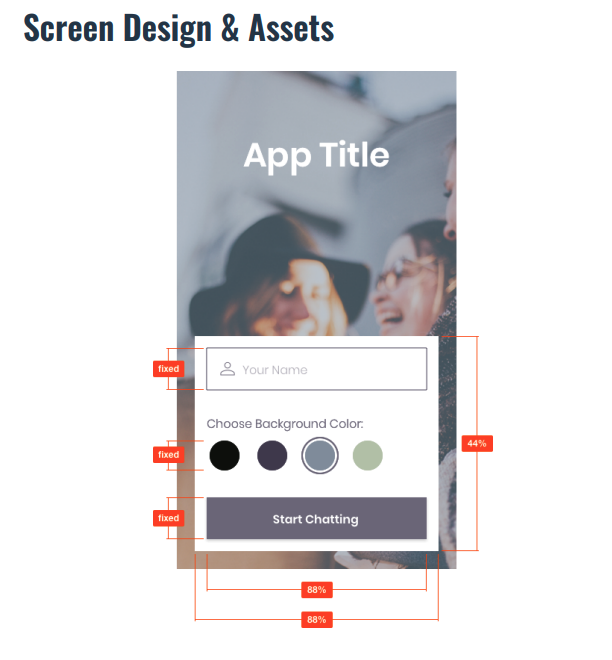

ChitChat App
Overview

ChitChat was developed using React Native, Expo and GiftedChat to create a messaging application. The app provides users with a chat interface with options to share images and their location. Users can choose between four different background colors for their chat which helps the app feel more personalized. This app was styled according to the given screen design. The users' conversations are stored in Google Firestore Database and the users can retrieve their messages without internet connection.
Testing Demo
Click here to see instructions on how to set up the demoPurpose
This application was a part of my web development course at CareerFoundry to showcase my skills in creating Native applications.
Objective
In this project, I aimed to build a chat app for mobile devices using React Native. The app will provide users with a chat interface and options to share images and their location.
Project Duration
One month
Tools Used
- React Native
- Expo
- Google Firestore Database
- Gifted Chat Library
Process
The first step in the process of creating this application was to start with the layout and styling, which is different from the previous approaches I have learned so far. I was given the exact specifications for the design, including the desired photo for the background image. After the layout was complete, I installed the Gifted Chat library instead of creating my own chat app from scratch. In order to save the messages being sent, I utilized Firestore. I chose to authenticate users annonymously so users can begin using the app immediately without needing to sign in. With the aim of being able to use ChitChat offline, using asyncStorage to provide a JavaScript API that will allow messages will be stored locally.
Challenges
A key feature that the project brief required is to allows users to send photos and share their location. I had an issue with creating the ActionSheet which would create a list of options for the user to choose from. I researched the issue and scheduled a call with my mentor to discuss the issue. I learned that I needed to additionally install ActionSheet as a dependency, as well as change my class component to a function component so that I could utilize hooks.
Results
Getting to dip my toes into the world of Native Applications was a rewarding experience and I look forward to continuing to learn more.
Credits
- Role: Lead Developer
- Tutor: Ezequiel De Simone
- Mentor: Alfredo Salazar Vélez